Dataset: val
Source: artifacts/eval/val_comparison_summary.json
Generated 2025-12-22T09:21:02.854908 UTC
| Model | Accuracy | P(label=1) | R(label=1) | F1(label=1) | ROC AUC | Avg Precision | Latency (ms/sample) |
|---|---|---|---|---|---|---|---|
| gbdt | 0.679 | 0.700 | 0.824 | 0.757 | 0.706 | 0.813 | 1.43 |
| xgb | 0.607 | 0.688 | 0.647 | 0.667 | 0.684 | 0.801 | 0.53 |
| rf | 0.714 | 0.737 | 0.824 | 0.778 | 0.722 | 0.833 | 1.76 |
| text | 0.857 | 0.933 | 0.824 | 0.875 | 0.914 | 0.947 | 0.12 |
| st | 0.857 | 0.933 | 0.824 | 0.875 | 0.888 | 0.939 | 5.71 |
| ensemble_gbdt_tfidf | 0.786 | 0.824 | 0.824 | 0.824 | 0.840 | 0.897 | 0.26 |
| ensemble_gbdt_st | 0.750 | 0.778 | 0.824 | 0.800 | 0.834 | 0.903 | 2.13 |
| ensemble_xgb_tfidf | 0.786 | 0.824 | 0.824 | 0.824 | 0.813 | 0.879 | 0.64 |
| ensemble_xgb_st | 0.714 | 0.737 | 0.824 | 0.778 | 0.802 | 0.883 | 2.23 |
| ensemble_rf_tfidf | 0.821 | 0.875 | 0.824 | 0.848 | 0.856 | 0.903 | 1.83 |
| ensemble_rf_st | 0.821 | 0.875 | 0.824 | 0.848 | 0.834 | 0.908 | 3.58 |
| llm | 0.750 | 0.750 | 0.882 | 0.811 | 0.714 | 0.733 | 200.00 |
Latency values equal to 0 indicate the model reused cached predictions (e.g., the LLM reasoner).
| Model | Precision | Recall | Latency (ms) | Cost $/1M | Speedup vs Claude | Savings vs Claude |
|---|---|---|---|---|---|---|
| claude | 1.000 | 1.000 | 1500.00 | 1800.0000 | 1.000 | 1.000 |
| gbdt | 0.700 | 0.824 | 1.43 | 0.0544 | 1049.649 | 33063.944 |
| xgb | 0.688 | 0.647 | 0.53 | 0.0202 | 2834.319 | 89281.045 |
| rf | 0.737 | 0.824 | 1.76 | 0.0672 | 850.194 | 26781.105 |
| text | 0.933 | 0.824 | 0.12 | 0.0044 | 12964.963 | 408396.344 |
| st | 0.933 | 0.824 | 5.71 | 2.2810 | 262.518 | 789.120 |
| ensemble_gbdt_tfidf | 0.824 | 0.824 | 0.26 | 0.0101 | 5674.654 | 178751.585 |
| ensemble_gbdt_st | 0.778 | 0.824 | 2.13 | 0.8522 | 702.653 | 2112.148 |
| ensemble_xgb_tfidf | 0.824 | 0.824 | 0.64 | 0.0244 | 2339.187 | 73684.379 |
| ensemble_xgb_st | 0.737 | 0.824 | 2.23 | 0.8918 | 671.495 | 2018.490 |
| ensemble_rf_tfidf | 0.875 | 0.824 | 1.83 | 0.0696 | 820.702 | 25852.109 |
| ensemble_rf_st | 0.875 | 0.824 | 3.58 | 1.4272 | 419.564 | 1261.193 |
| llm | 0.750 | 0.882 | 200.00 | 79.8413 | 7.500 | 22.545 |
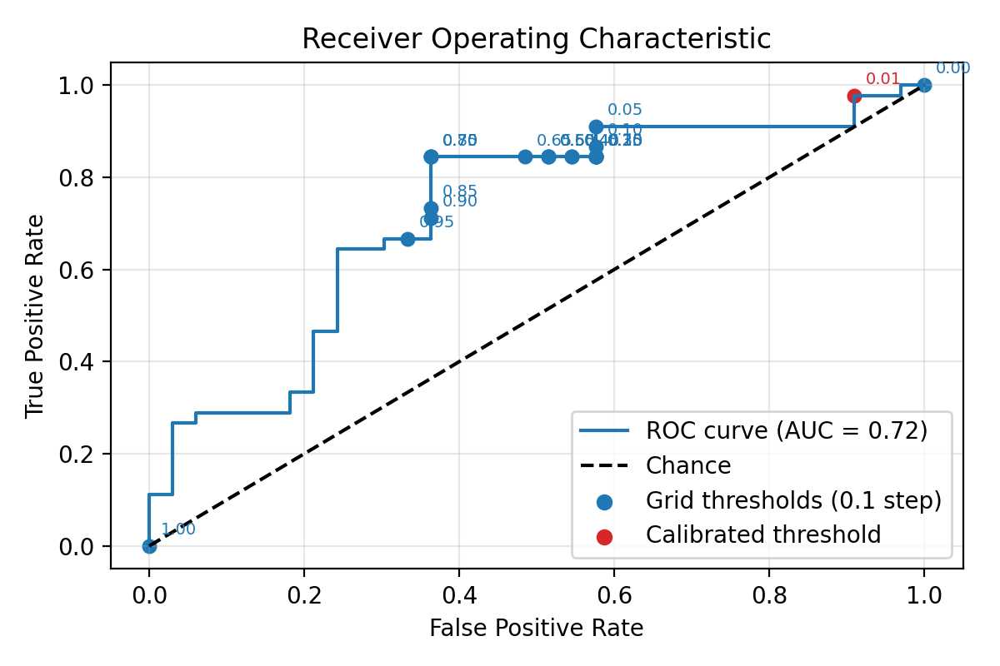
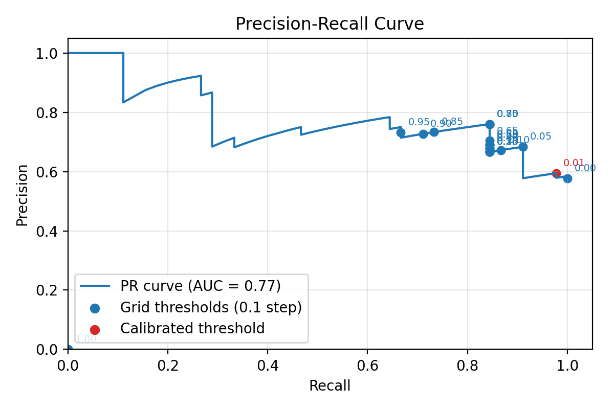
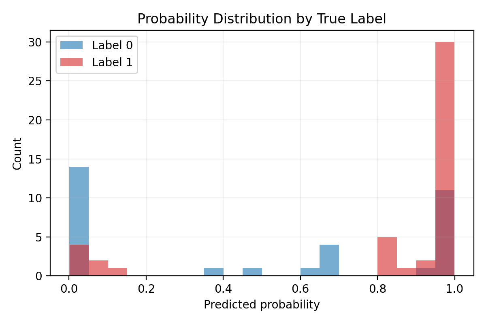
| Threshold | Precision | Recall | TP | FP | TN | FN |
|---|---|---|---|---|---|---|
| 0.100 | 0.625 | 0.882 | 15 | 9 | 2 | 2 |
| 0.200 | 0.700 | 0.824 | 14 | 6 | 5 | 3 |
| 0.300 | 0.700 | 0.824 | 14 | 6 | 5 | 3 |
| 0.400 | 0.700 | 0.824 | 14 | 6 | 5 | 3 |
| 0.500 | 0.700 | 0.824 | 14 | 6 | 5 | 3 |
| 0.600 | 0.737 | 0.824 | 14 | 5 | 6 | 3 |
| 0.700 | 0.812 | 0.765 | 13 | 3 | 8 | 4 |
| 0.800 | 0.769 | 0.588 | 10 | 3 | 8 | 7 |
| 0.900 | 0.750 | 0.529 | 9 | 3 | 8 | 8 |
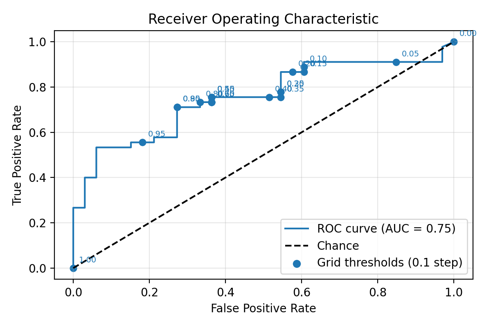
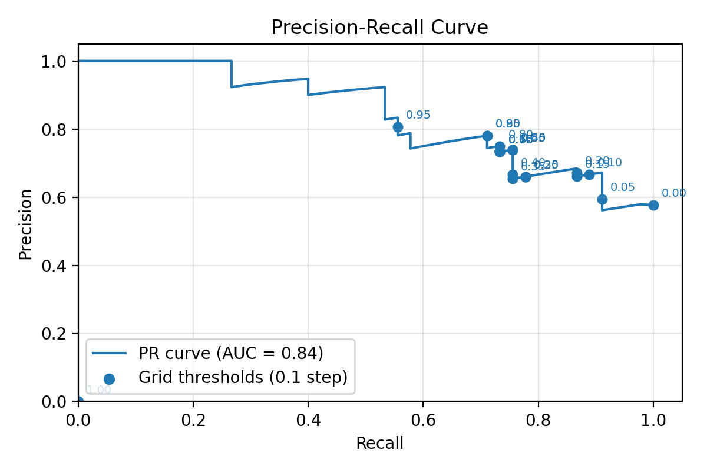
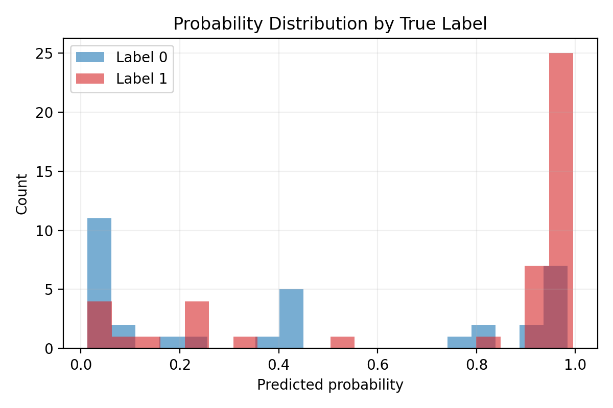
| Threshold | Precision | Recall | TP | FP | TN | FN |
|---|---|---|---|---|---|---|
| 0.100 | 0.714 | 0.882 | 15 | 6 | 5 | 2 |
| 0.200 | 0.714 | 0.882 | 15 | 6 | 5 | 2 |
| 0.300 | 0.700 | 0.824 | 14 | 6 | 5 | 3 |
| 0.400 | 0.700 | 0.824 | 14 | 6 | 5 | 3 |
| 0.500 | 0.688 | 0.647 | 11 | 5 | 6 | 6 |
| 0.600 | 0.786 | 0.647 | 11 | 3 | 8 | 6 |
| 0.700 | 0.786 | 0.647 | 11 | 3 | 8 | 6 |
| 0.800 | 0.769 | 0.588 | 10 | 3 | 8 | 7 |
| 0.900 | 0.750 | 0.529 | 9 | 3 | 8 | 8 |
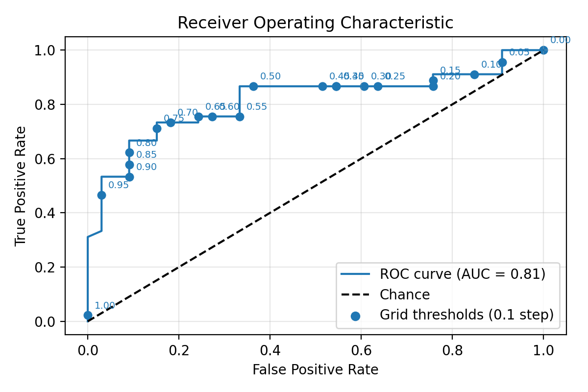
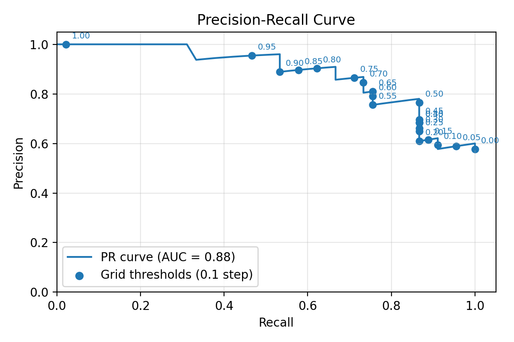
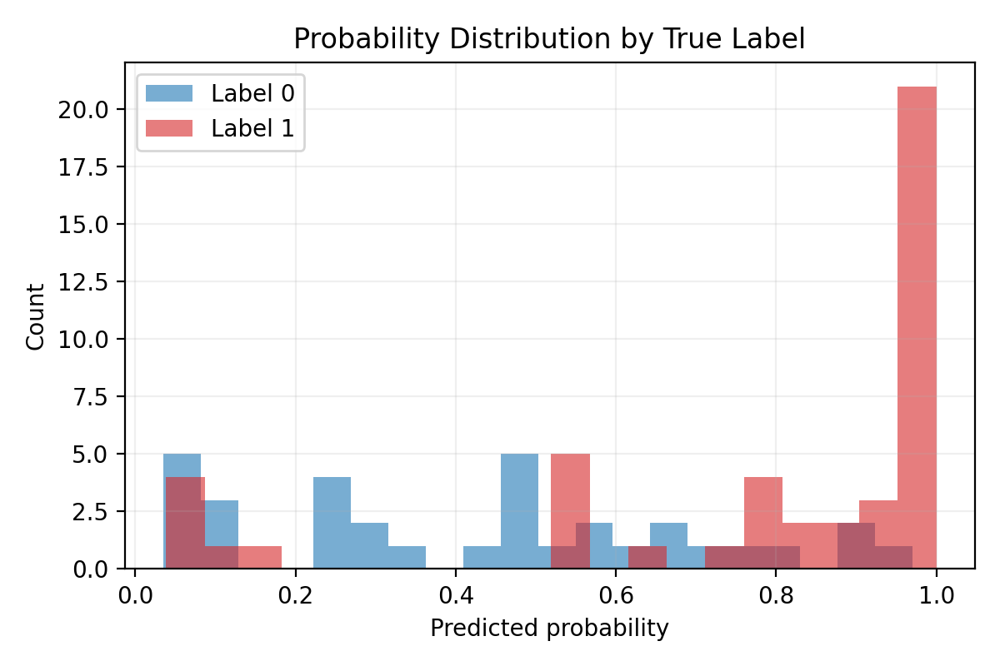
| Threshold | Precision | Recall | TP | FP | TN | FN |
|---|---|---|---|---|---|---|
| 0.100 | 0.593 | 0.941 | 16 | 11 | 0 | 1 |
| 0.200 | 0.682 | 0.882 | 15 | 7 | 4 | 2 |
| 0.300 | 0.667 | 0.824 | 14 | 7 | 4 | 3 |
| 0.400 | 0.700 | 0.824 | 14 | 6 | 5 | 3 |
| 0.500 | 0.737 | 0.824 | 14 | 5 | 6 | 3 |
| 0.600 | 0.812 | 0.765 | 13 | 3 | 8 | 4 |
| 0.700 | 0.800 | 0.471 | 8 | 2 | 9 | 9 |
| 0.800 | 0.800 | 0.471 | 8 | 2 | 9 | 9 |
| 0.900 | 0.875 | 0.412 | 7 | 1 | 10 | 10 |
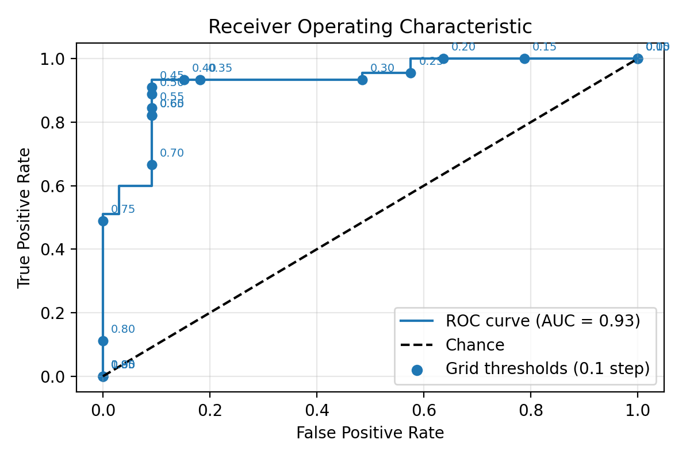
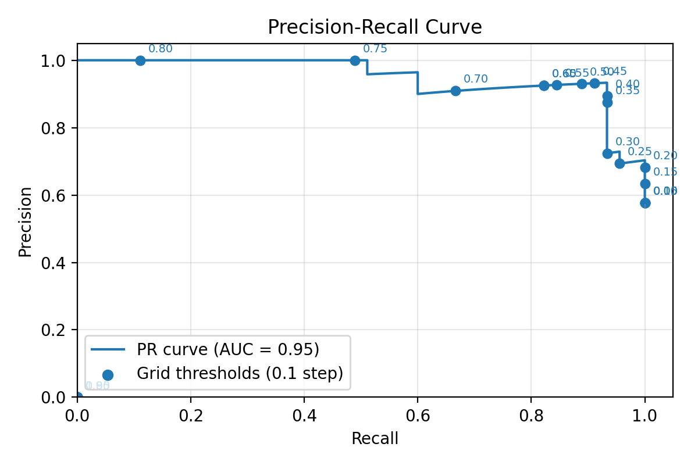
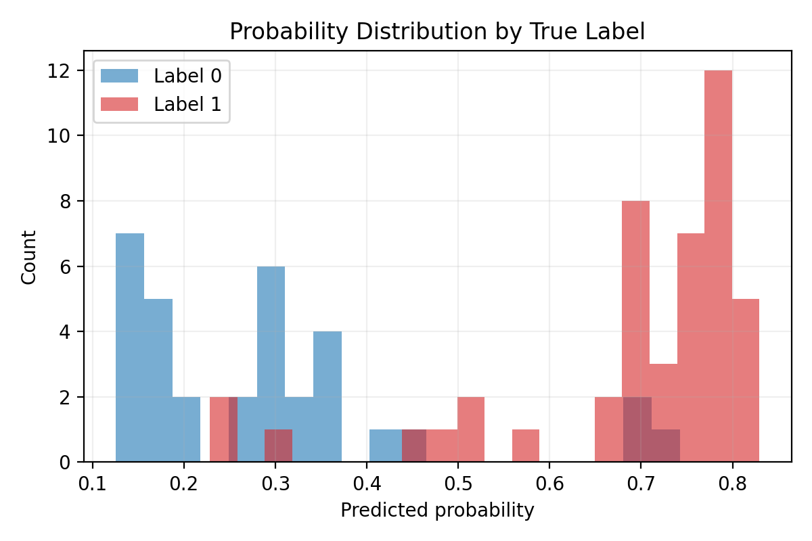
| Threshold | Precision | Recall | TP | FP | TN | FN |
|---|---|---|---|---|---|---|
| 0.100 | 0.607 | 1.000 | 17 | 11 | 0 | 0 |
| 0.200 | 0.773 | 1.000 | 17 | 5 | 6 | 0 |
| 0.300 | 0.750 | 0.882 | 15 | 5 | 6 | 2 |
| 0.400 | 0.938 | 0.882 | 15 | 1 | 10 | 2 |
| 0.500 | 0.933 | 0.824 | 14 | 1 | 10 | 3 |
| 0.600 | 0.929 | 0.765 | 13 | 1 | 10 | 4 |
| 0.700 | 0.929 | 0.765 | 13 | 1 | 10 | 4 |
| 0.800 | 1.000 | 0.235 | 4 | 0 | 11 | 13 |
| 0.900 | 0.000 | 0.000 | 0 | 0 | 11 | 17 |
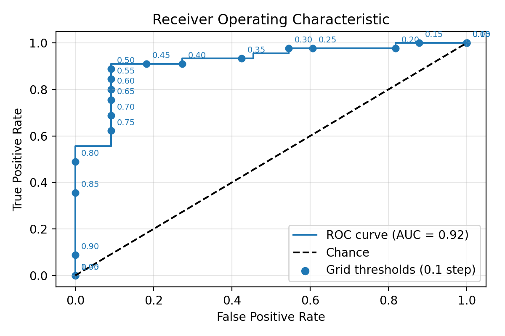
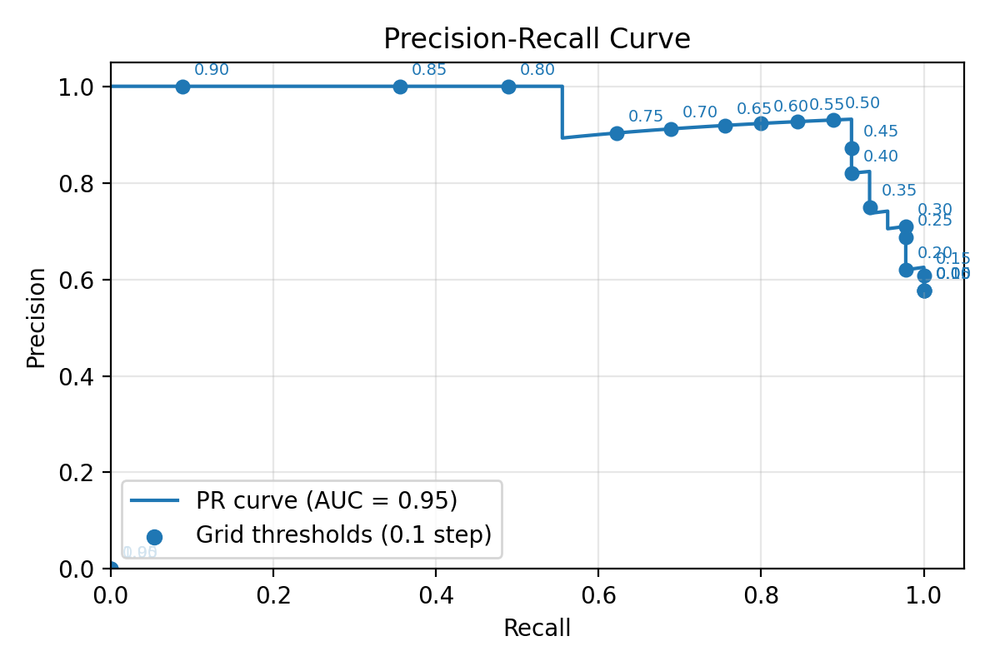
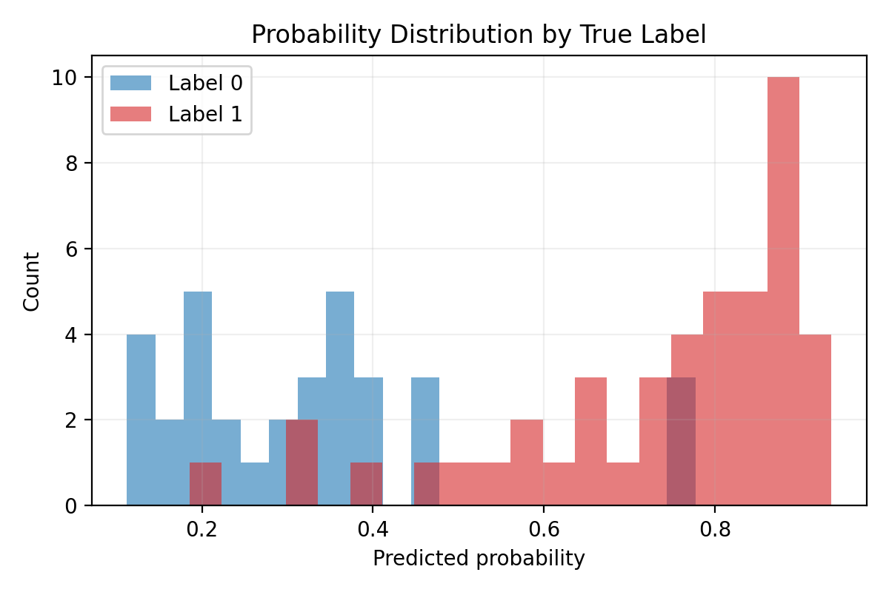
| Threshold | Precision | Recall | TP | FP | TN | FN |
|---|---|---|---|---|---|---|
| 0.100 | 0.607 | 1.000 | 17 | 11 | 0 | 0 |
| 0.200 | 0.615 | 0.941 | 16 | 10 | 1 | 1 |
| 0.300 | 0.800 | 0.941 | 16 | 4 | 7 | 1 |
| 0.400 | 0.933 | 0.824 | 14 | 1 | 10 | 3 |
| 0.500 | 0.933 | 0.824 | 14 | 1 | 10 | 3 |
| 0.600 | 0.929 | 0.765 | 13 | 1 | 10 | 4 |
| 0.700 | 0.923 | 0.706 | 12 | 1 | 10 | 5 |
| 0.800 | 1.000 | 0.412 | 7 | 0 | 11 | 10 |
| 0.900 | 1.000 | 0.059 | 1 | 0 | 11 | 16 |
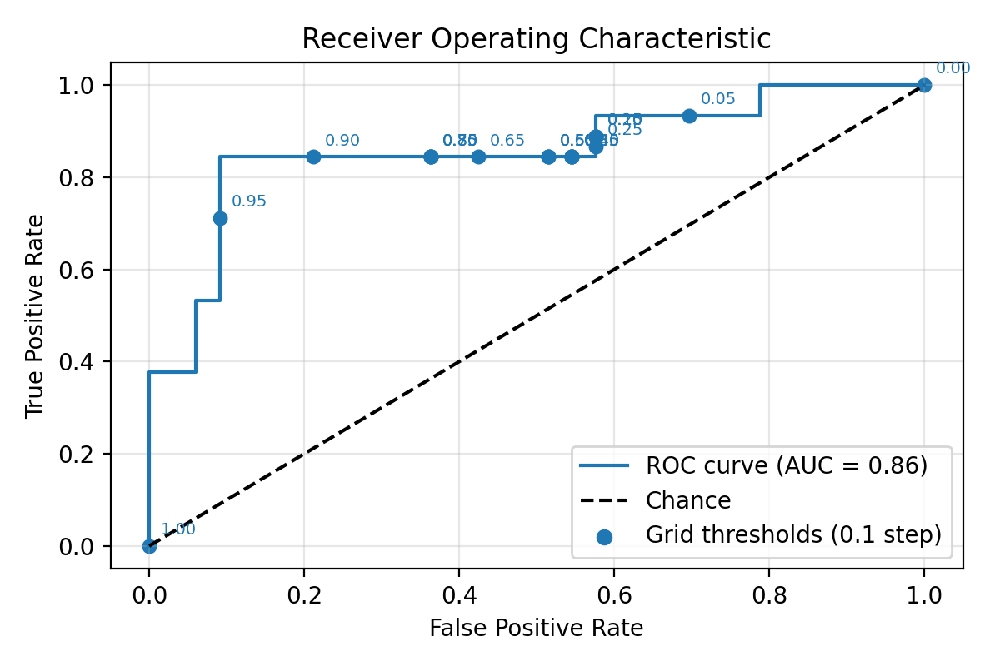
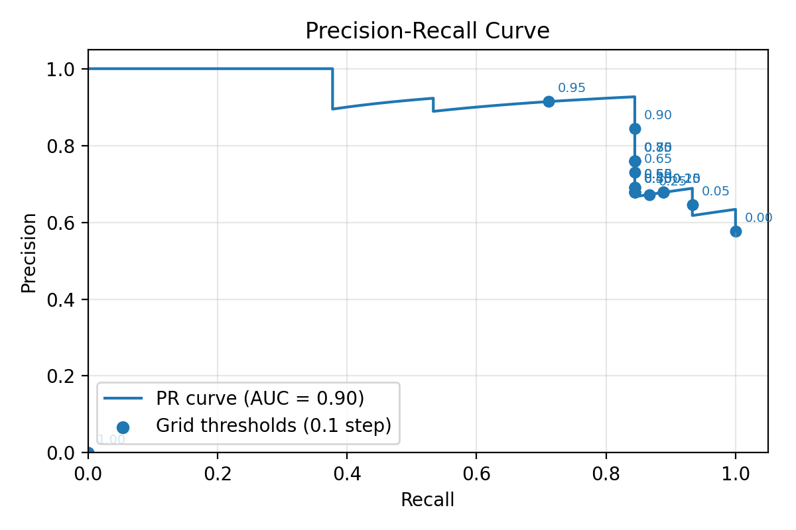
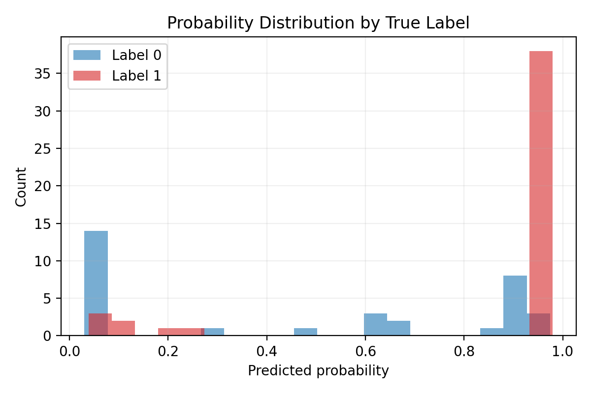
| Threshold | Precision | Recall | TP | FP | TN | FN |
|---|---|---|---|---|---|---|
| 0.100 | 0.714 | 0.882 | 15 | 6 | 5 | 2 |
| 0.200 | 0.700 | 0.824 | 14 | 6 | 5 | 3 |
| 0.300 | 0.700 | 0.824 | 14 | 6 | 5 | 3 |
| 0.400 | 0.778 | 0.824 | 14 | 4 | 7 | 3 |
| 0.500 | 0.824 | 0.824 | 14 | 3 | 8 | 3 |
| 0.600 | 0.824 | 0.824 | 14 | 3 | 8 | 3 |
| 0.700 | 0.875 | 0.824 | 14 | 2 | 9 | 3 |
| 0.800 | 0.933 | 0.824 | 14 | 1 | 10 | 3 |
| 0.900 | 0.900 | 0.529 | 9 | 1 | 10 | 8 |
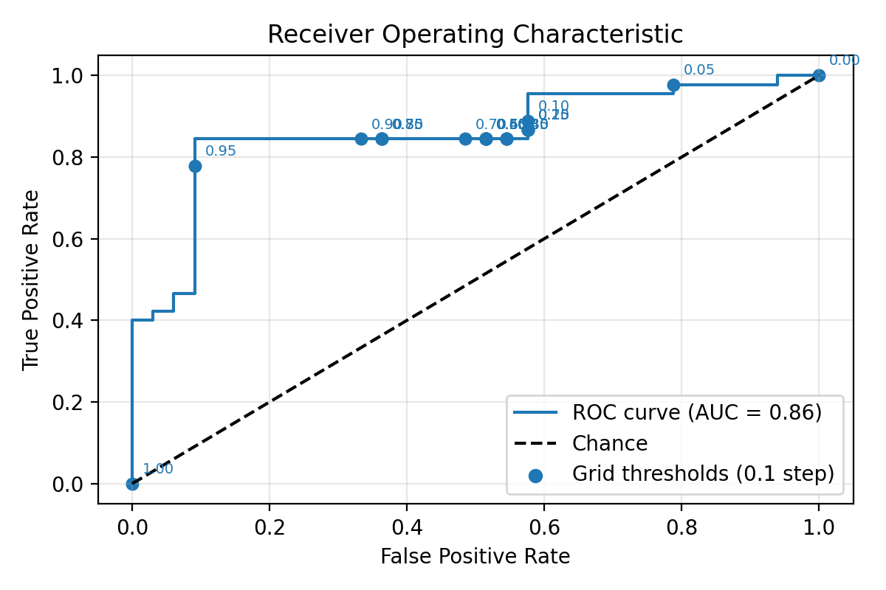
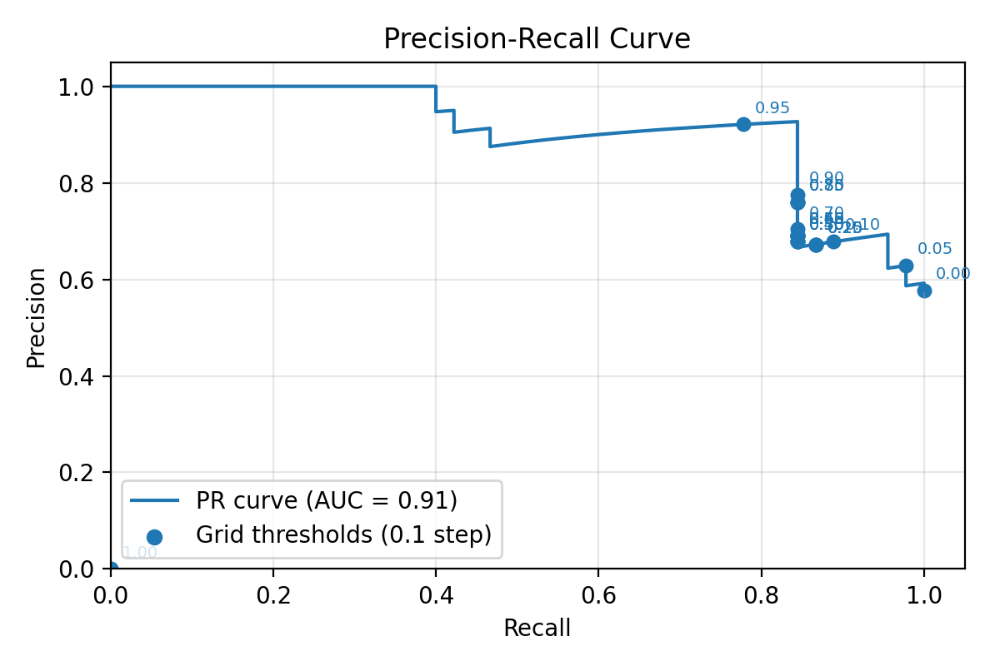
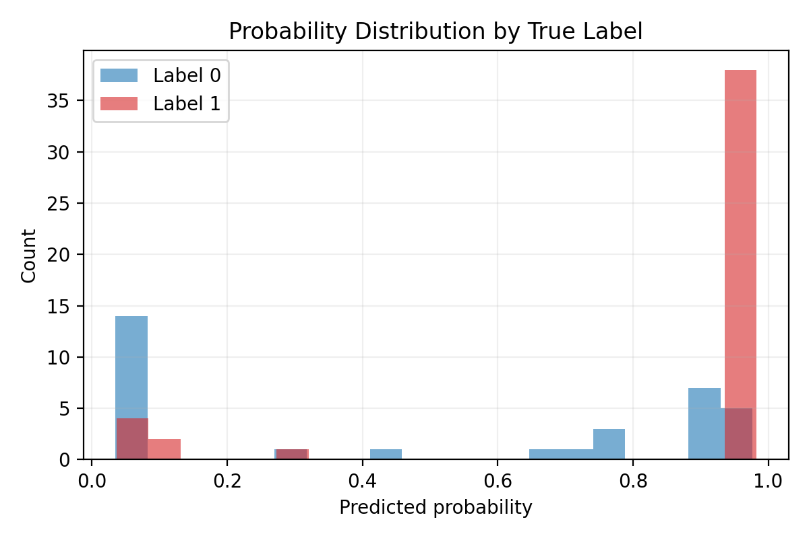
| Threshold | Precision | Recall | TP | FP | TN | FN |
|---|---|---|---|---|---|---|
| 0.100 | 0.700 | 0.824 | 14 | 6 | 5 | 3 |
| 0.200 | 0.700 | 0.824 | 14 | 6 | 5 | 3 |
| 0.300 | 0.700 | 0.824 | 14 | 6 | 5 | 3 |
| 0.400 | 0.737 | 0.824 | 14 | 5 | 6 | 3 |
| 0.500 | 0.778 | 0.824 | 14 | 4 | 7 | 3 |
| 0.600 | 0.824 | 0.824 | 14 | 3 | 8 | 3 |
| 0.700 | 0.824 | 0.824 | 14 | 3 | 8 | 3 |
| 0.800 | 0.875 | 0.824 | 14 | 2 | 9 | 3 |
| 0.900 | 0.929 | 0.765 | 13 | 1 | 10 | 4 |
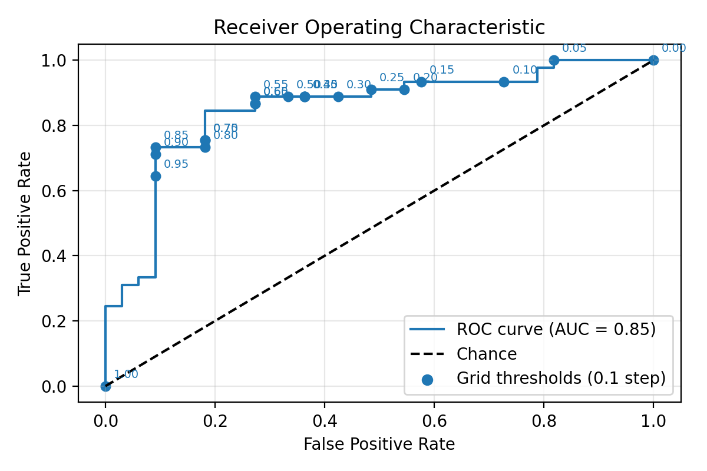
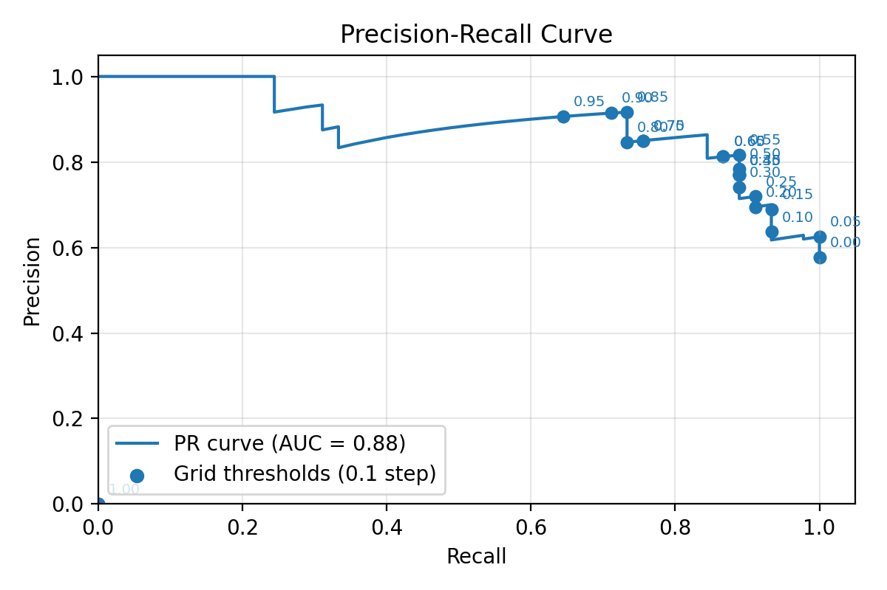
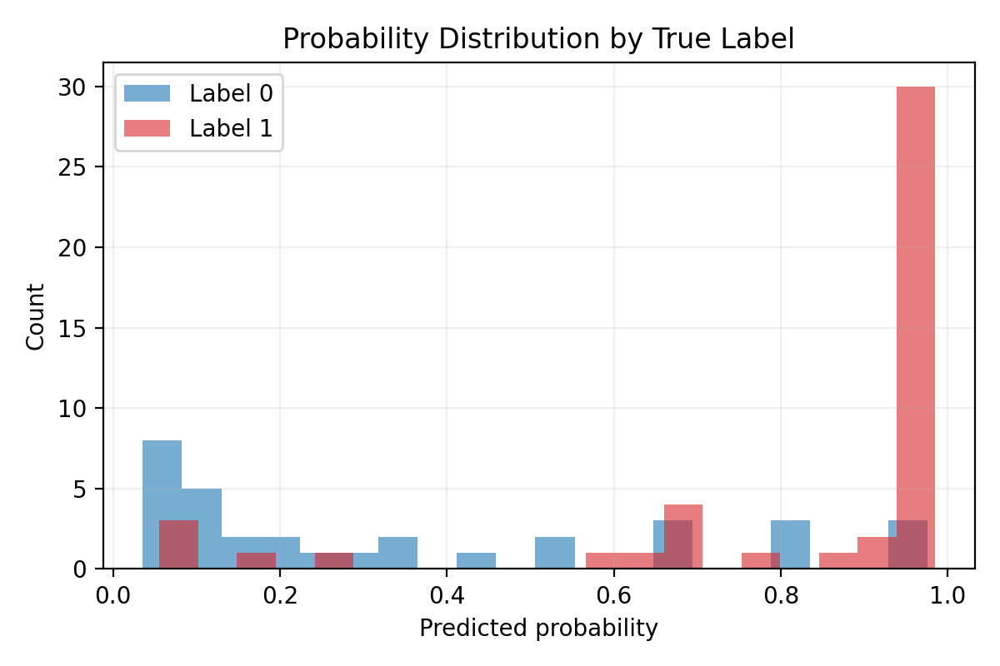
| Threshold | Precision | Recall | TP | FP | TN | FN |
|---|---|---|---|---|---|---|
| 0.100 | 0.714 | 0.882 | 15 | 6 | 5 | 2 |
| 0.200 | 0.714 | 0.882 | 15 | 6 | 5 | 2 |
| 0.300 | 0.737 | 0.824 | 14 | 5 | 6 | 3 |
| 0.400 | 0.737 | 0.824 | 14 | 5 | 6 | 3 |
| 0.500 | 0.824 | 0.824 | 14 | 3 | 8 | 3 |
| 0.600 | 0.824 | 0.824 | 14 | 3 | 8 | 3 |
| 0.700 | 0.824 | 0.824 | 14 | 3 | 8 | 3 |
| 0.800 | 0.846 | 0.647 | 11 | 2 | 9 | 6 |
| 0.900 | 0.917 | 0.647 | 11 | 1 | 10 | 6 |
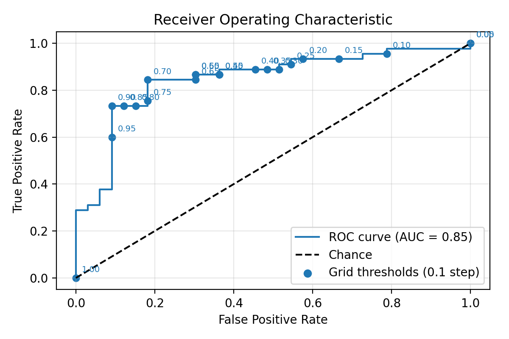
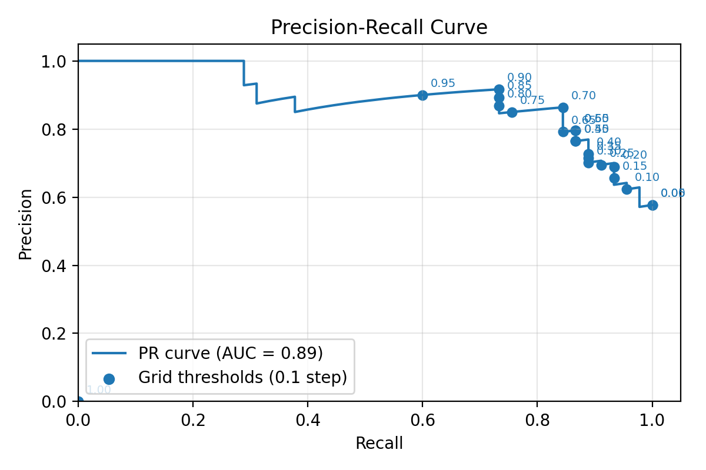
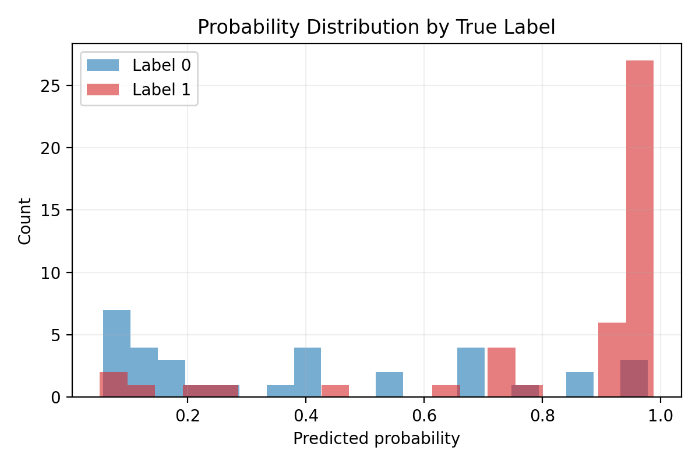
| Threshold | Precision | Recall | TP | FP | TN | FN |
|---|---|---|---|---|---|---|
| 0.100 | 0.714 | 0.882 | 15 | 6 | 5 | 2 |
| 0.200 | 0.700 | 0.824 | 14 | 6 | 5 | 3 |
| 0.300 | 0.700 | 0.824 | 14 | 6 | 5 | 3 |
| 0.400 | 0.737 | 0.824 | 14 | 5 | 6 | 3 |
| 0.500 | 0.737 | 0.824 | 14 | 5 | 6 | 3 |
| 0.600 | 0.824 | 0.824 | 14 | 3 | 8 | 3 |
| 0.700 | 0.824 | 0.824 | 14 | 3 | 8 | 3 |
| 0.800 | 0.786 | 0.647 | 11 | 3 | 8 | 6 |
| 0.900 | 0.917 | 0.647 | 11 | 1 | 10 | 6 |
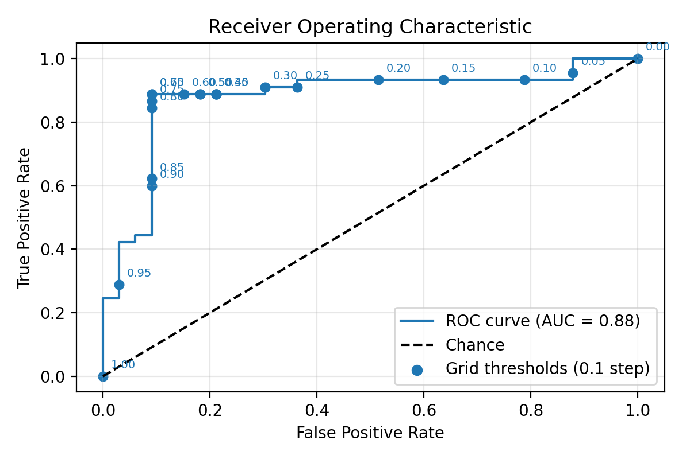
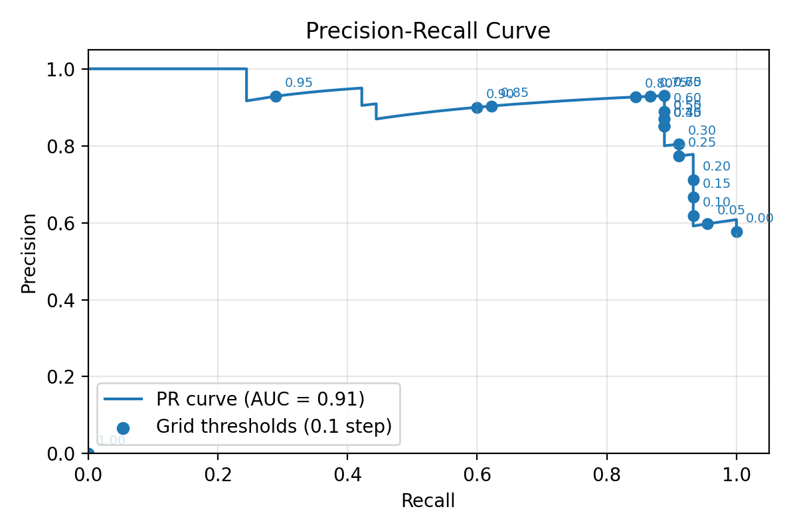
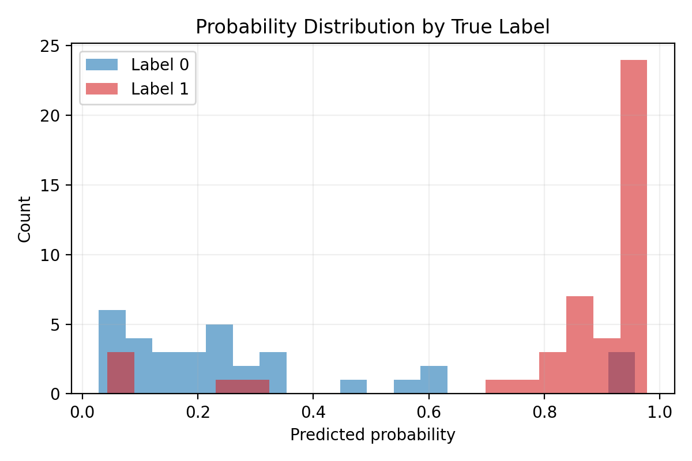
| Threshold | Precision | Recall | TP | FP | TN | FN |
|---|---|---|---|---|---|---|
| 0.100 | 0.714 | 0.882 | 15 | 6 | 5 | 2 |
| 0.200 | 0.750 | 0.882 | 15 | 5 | 6 | 2 |
| 0.300 | 0.778 | 0.824 | 14 | 4 | 7 | 3 |
| 0.400 | 0.875 | 0.824 | 14 | 2 | 9 | 3 |
| 0.500 | 0.875 | 0.824 | 14 | 2 | 9 | 3 |
| 0.600 | 0.933 | 0.824 | 14 | 1 | 10 | 3 |
| 0.700 | 0.933 | 0.824 | 14 | 1 | 10 | 3 |
| 0.800 | 0.933 | 0.824 | 14 | 1 | 10 | 3 |
| 0.900 | 0.875 | 0.412 | 7 | 1 | 10 | 10 |
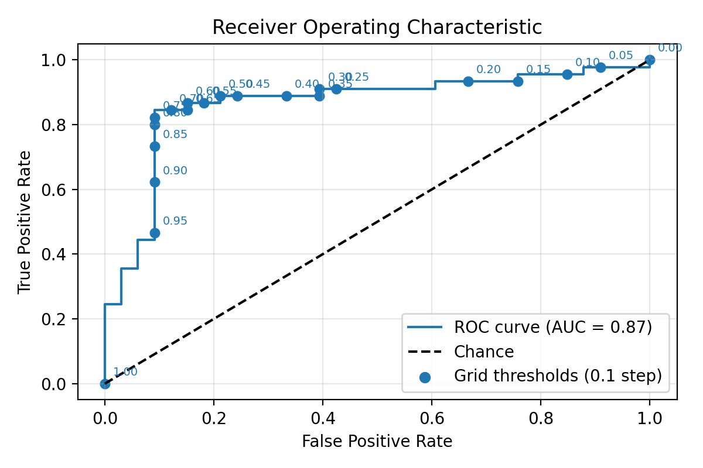
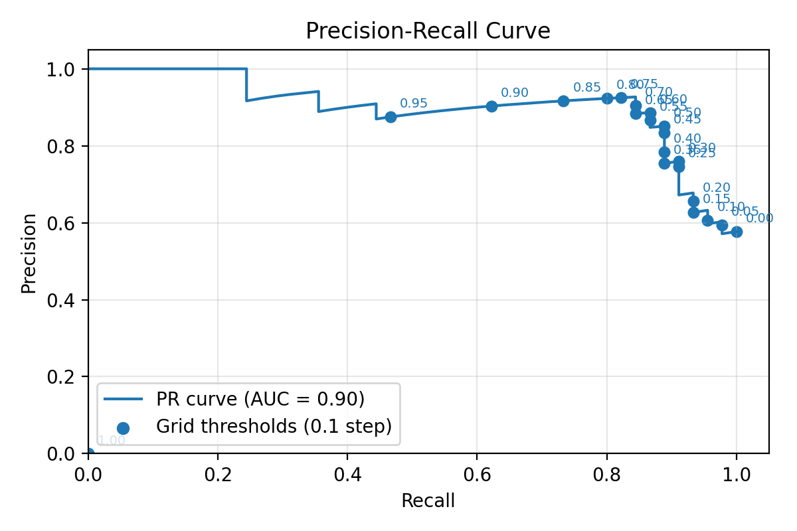
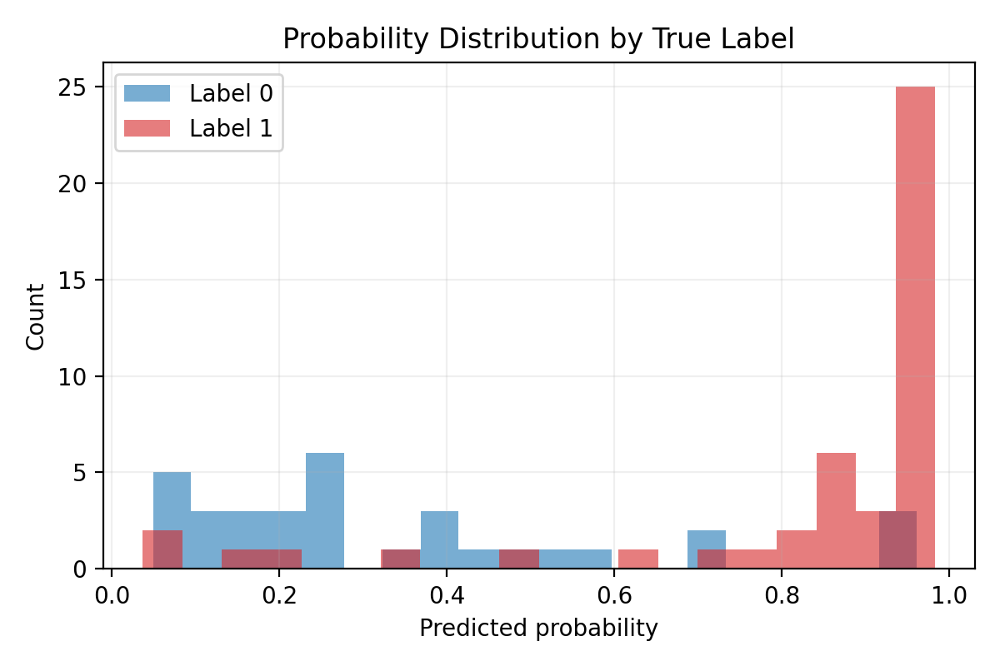
| Threshold | Precision | Recall | TP | FP | TN | FN |
|---|---|---|---|---|---|---|
| 0.100 | 0.682 | 0.882 | 15 | 7 | 4 | 2 |
| 0.200 | 0.737 | 0.824 | 14 | 5 | 6 | 3 |
| 0.300 | 0.778 | 0.824 | 14 | 4 | 7 | 3 |
| 0.400 | 0.824 | 0.824 | 14 | 3 | 8 | 3 |
| 0.500 | 0.875 | 0.824 | 14 | 2 | 9 | 3 |
| 0.600 | 0.875 | 0.824 | 14 | 2 | 9 | 3 |
| 0.700 | 0.933 | 0.824 | 14 | 1 | 10 | 3 |
| 0.800 | 0.929 | 0.765 | 13 | 1 | 10 | 4 |
| 0.900 | 0.917 | 0.647 | 11 | 1 | 10 | 6 |
| Threshold | Precision | Recall | TP | FP | TN | FN |
|---|---|---|---|---|---|---|
| 0.100 | 0.750 | 0.882 | 15 | 5 | 6 | 2 |
| 0.200 | 0.750 | 0.882 | 15 | 5 | 6 | 2 |
| 0.300 | 0.750 | 0.882 | 15 | 5 | 6 | 2 |
| 0.400 | 0.750 | 0.882 | 15 | 5 | 6 | 2 |
| 0.500 | 0.750 | 0.882 | 15 | 5 | 6 | 2 |
| 0.600 | 0.750 | 0.882 | 15 | 5 | 6 | 2 |
| 0.700 | 0.750 | 0.882 | 15 | 5 | 6 | 2 |
| 0.800 | 0.750 | 0.882 | 15 | 5 | 6 | 2 |
| 0.900 | 0.750 | 0.882 | 15 | 5 | 6 | 2 |